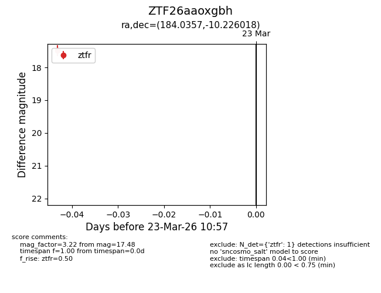
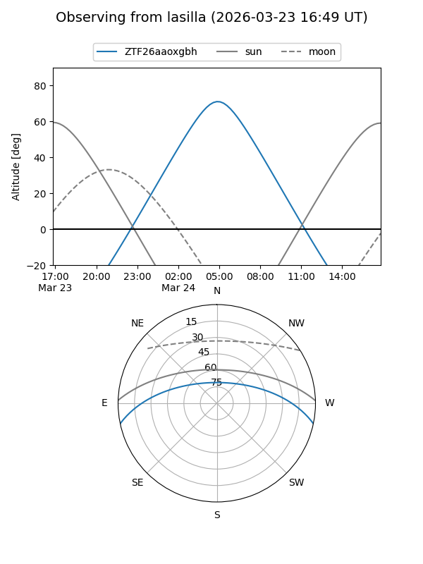
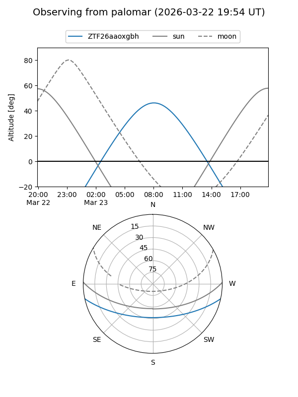

ZTF26aaoxgbh
Target ZTF26aaoxgbh at 2026-03-23 11:00
Aliases and brokers:
FINK: link
Lasair: link
ALeRCE: link
alt names
ZTF26aaoxgbh (ztf,fink_ztf)
Coordinates:
equatorial (ra, dec) = 184.0357,-10.22602
equatorial (HMS+DMS) = 12:16:08.56,-10:13:33.67
galactic (l, b) = (288.8417,+51.67753)
Flags:
Photometry:
last ztfr=17.48
1 ztfr detections
Lightcurve

Visibility


Additional plots